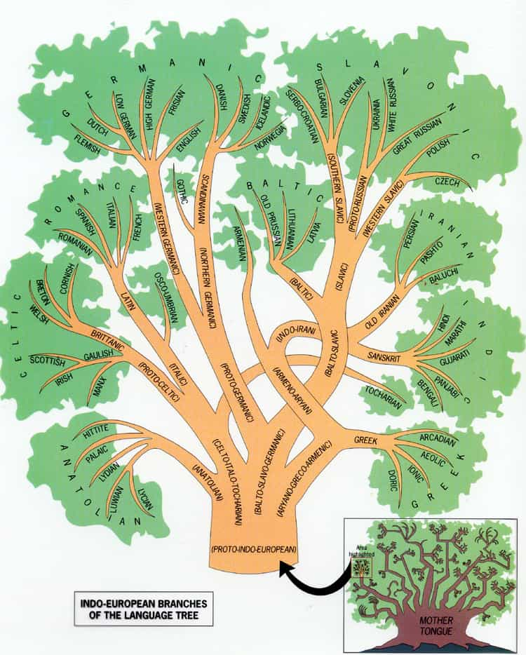
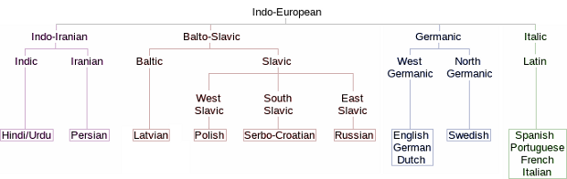

Depending on a variety of preferences and circumstances, to learn several languages is highly beneficial at best and time-consuming yet frustrating at worst. While ROK rightly has stressed that some generally may be more relevant than others (for instance, Spanish likely beats Arabic and Manadarin), I will not go into that specific debate here.
Instead I will convey a little about my own experiences of learning three different languages (besides English) and what efforts that underlie such a process. Hopefully that will provide a more realistic and nuanced understanding of what it takes to master, or at least significantly learn another tongue.
Norwegian

One of the main aspects of learning a different language is the level of similarity in comparison to your own mother tongue. As a Swede, Norwegian is very similar in just about every way that concerns grammar and vocabulary. Roughly 90% of all written words are so similar in spelling and meaning that a Swede (or Dane) understands them, and Swedes seldom experience difficulties regarding the spoken language either.
Yet there are differences that sometimes cause misunderstandings, for instance a larger degree of diphthongs (a sound formed by the combination of two vowels in a single syllable). That is why those Swedes who live closer to the Norwegian border find it easier to understand spoken Norwegian.
In any case, an average Swede understands the bulk of Norwegian, and once he moves there and get accustomed to the 10% of words that are completely different from Swedish he can be linguistically integrated. I have studied Norwegian and Danish for a very limited time and it was obvious that I could learn it even better than German.
German

As for German, I studied it between the ages of 13-18, in elementary school and high school, and then read a number of academic works in German between 2009-2012. The latter, of course, helped me to widen my vocabulary beyond the basics.
Before my last visit in a predominantly German-speaking country, Switzerland, I studied it for a few hours and while I was there I tried to speak it with my girlfriend and people whom I met, in conjunction with looking for all of those words online that I was keen on learning or had forgot.
Although I had to struggle a bit with all of the new words, and parts of the grammar are a bit arduous to deal with, I found the process rather easy and frictionless. In part that is because Swedish and German are fairly similar, about as similar as German and English, although not as similar as Norwegian.
German and English are somewhat more alike in a grammatical sense, as both are part of the Western-Germanic branch of the Indo-European language tree, but due to the large share and number of borrowings from German between particularly 1100-1350, and later also during the 19th century, Swedes have a slight lexical advantage.
Korean
Korean, the only Oriental language that I have learned in depth, is definitely another kettle of fish than the relatively similar Germanic languages. Korean is often categorized as a rather unique Altaic language, only slightly similar to Japanese, and completely different from Mandarin. Only the large share of borrowings makes it “related” to Chinese, but the latter is a Sino-Tibetan language which has no affinities with neither Korean nor Japanese.
While I was working part-time I had the opportunity to study Korean full-time at univeristy, which is entirely for free in the part of Europe where I was living. My schedule was tough as the pace of learning was high, completely different from the slow tempo so common in high school. With the combination of lots of self-learning and amazing native Korean teachers, I could learn more than 5,000 words and phrases within a year and have a simple conversation with another student (or attractive Korean girls in their 20s).
I then continued with intermediate level, learning roughly 10,000 more words and more complex grammar, before I had to stop. I then bought some of the more advanced text books, listened to K-pop, and visited South Korea for almost a month. I approached a lot and had a romance with a girl whom I talked to in Korean a lot. Now I can quit for a while and then continue to study when I have available time and am motivated, but since Korean is much less automated than the Germanic languages it’s always a struggle.
Underlying factors and tips
Psychologists like Arthur Jensen and Richard Lynn have shown that the combination of intelligence, opportunity and motvation (or concientiousness) leads to varying degrees of achievements in just about every field. To learn languages is no different. Some have an aptitude for such pursuits, often linked to verbal intelligence, and some don’t.
For men in general, who neither are linguistic geniuses nor borderline retarded, opportunity, diligence and motivation matter a lot. For that reason, combined with how similar a specific language is, you should probably focus on one or two relatively similar languages, like German and Spanish, and only deal with a vastly different such like Korean or Russian if you really have time.
Of course, things are not black or white, and sometimes just a couple of words and phrases during a vacation give something in return, but I would not consider that as by any means to have actually learned the language. For a man to do so, he must study it thoroughly, and mix it with lots of real life conversation. If you don’t attend at a university, then at least buy the same literature as they use, start with a beginners book, and then continue with intermediate in due time. Forget about learning a language in one week and such nonsense. It’s often hard, given that it’s not very similar to begin with.
For more of William Adams’ material, check out his website Syncretic Politics.
Read More: 9 Languages Men Should Consider Learning